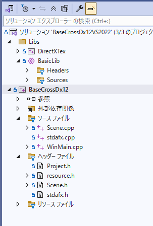

BaseCrossDx12ドキュメント
【Sample000】Emptyプロジェクト
このサンプルはSamples/Sample000ディレクトリ内にあります。VisualStdioで該当ソリューション（VS2022でBaseCrossDx12VS2022.sln）を開いてください。ビルド後実行すると、以下の画面が現れます。Escキーを押すか×ボタンで終了します。Altを押しながらEnterで、全画面に変更できます。Windowモードに戻すときは、再びAltを押しながらEnterを押します。
Emptyプロジェクトとは
Emptyプロジェクトとは、ゲーム制作開始時の何も表示しないプロジェクトを指します。何も表示しないと言っても、フレームワークごとの特有の情報や仕組みが実装されているのが通常です。
BaseCrossDx12も例外ではなく、現在のFPS値とElapsedTime値が表示されています。 Sample000のようにSample0..で始まるサンプルは、ベーシックなサンプルです。DirectX12オブジェクトもある程度作らなければいけません。
Sample101のようにSample1..で始まるサンプルは、ゲームステージ、コンポーネントなど、ある程度個別ライブラリの形でそろっています（スタンダードサンプル）。BaseCrossの前バージョンであるBaseCross64を使った時がある人はわかると思いますが、そのままゲーム制作を始められます。
Emptyプロジェクトの内容
Emptyプロジェクトのソリューションは以下の通りです。
WinMain.cpp
WinMain.cppには、このアプリケーションのエントリポイントであるWinMain関数があります。内容は以下の通りです。
_Use_decl_annotations_
int WINAPI WinMain(HINSTANCE hInstance, HINSTANCE, LPSTR, int nCmdShow)
{
// このプロセスを高DPI対応として宣言し、自動スケーリングを防止します。
HINSTANCE hUser32 = LoadLibrary(L"user32.dll");
if (hUser32)
{
typedef BOOL(WINAPI * LPSetProcessDPIAware)(void);
LPSetProcessDPIAware pSetProcessDPIAware = (LPSetProcessDPIAware)GetProcAddress(hUser32, "SetProcessDPIAware");
if (pSetProcessDPIAware)
{
pSetProcessDPIAware();
}
FreeLibrary(hUser32);
}
basecross::BaseDevice device(1280, 800, L"BaseCrossDx12");
return basecross::App::Run(&device, hInstance, nCmdShow);
}
BaseCrossDx12ははじめにに述べたように、ハイパフォーマンスのサンプルをもとに作成されます。ですので高DPI対応として作成します。
そのあとは
basecross::BaseDevice device(1280, 800, L"BaseCrossDx12"); return basecross::App::Run(&device, hInstance, nCmdShow);と、ローカル上にBaseDevice deviceオブジェクトを構築して、basecross::App::Run関数にdeviceを渡します。
basecrossネームスペース
BaseCrossDx12は、基本的にbasecrossネームスペースに含まれます。各ソースファイルは
namespace basecross {
//ソースの内容
}
//end namespace basecross
というようにbasecrossネームスペースに囲まれており、これによって名前の衝突等を避けています。
BaseDeviceクラス
BaseDeviceクラスはLibs/BasicLib内のBaseDevice.h/cppに記述がありPrimDeviceを継承してます。主にDirectX12デバイスを管理しています。
管理しているDx12リソースは以下です。
| リソース名 | 用途 |
|---|---|
| IDXGIFactory6 | IDXGISwapChain4を作成するためのオブジェクト |
| ID3D12Device | DirectX12デバイス、すべてのDireectX12リソースのベースとなる |
| IDXGISwapChain4 | RTVの、バックバッファ、フロントバッファを管理するオブジェクト |
| ID3D12CommandQueue | コマンドリストを実行するオブジェクト |
| レンダーターゲット | 実際にオブジェクト群が書き込まれる、キャンバスみたいなもの。バックバッファとフロントバッファがあり、ちらつきがないように、バックバッファに書き込んだ後、フロントバッファと入れ替える。BaseCrossDx12では3つのレンダーターゲットを扱う。 |
| ID3D12Fence | フェンス。CPUとGPUの同期に使用される。 |
| UILayer | デバッグ文字列（左上の文字列）を表示させるオブジェクト。表示したり消したりできます。 |
BaseDeviceクラスはこれらのオブジェクト（リソース）を作成し、シーン(Scene)を作成します。
Sceneクラス
Sceneクラスは描画されるオブジェクトをまとめるクラスです。コンテンツ側BaseCrossDx12フィルタ側に実装され、ライブラリ側からも見える仕様になっています。SceneクラスのインスタンスはBaseDevice::LoadAssets()関数内で行われます。unique_ptrとして作成します。
Sceneクラス自体は、BasicLib内のBaseSceneを継承して作られ、BaseSceneは多くの仮想関数を含んでいます。
Sceneクラスはそれらを多重定義することで多くの機能を（キャラクターなどのオブジェクトを）実装します。
このサンプルEmptyプロジェクトは何もしないサンプルなので、何もしない多重定義がほとんどですが、次ページの【Sample001】三角形の描画では、多重定義の例を見ることができます。詳細は次ページで説明します。
以下はEmptyプロジェクトのScene.hです。
/*!
@file Scene.h
@brief シーンクラス
*/
#pragma once
#include "stdafx.h"
#include "Project.h"
namespace basecross {
//--------------------------------------------------------------------------------------
// シーン
//--------------------------------------------------------------------------------------
class Scene : public BaseScene
{
public:
//--------------------------------------------------------------------------------------
/*!
@brief コンストラクタ
@param[in] frameCount フレーム数
@param[in] pPrimDevice デバイス
@return なし
*/
//--------------------------------------------------------------------------------------
Scene(UINT frameCount, PrimDevice* pPrimDevice);
virtual ~Scene();
protected:
//--------------------------------------------------------------------------------------
/*!
@brief コンテンツの作成
@param[in] pDevice デバイス
@param[in] pCommandList コマンドリスト
@return なし
*/
//--------------------------------------------------------------------------------------
virtual void CreateAssetResources(ID3D12Device* pDevice, ID3D12GraphicsCommandList* pCommandList)override {}
//--------------------------------------------------------------------------------------
/*!
@brief 更新処理
@param[in] elapsedTime 前のターンからの時間
@return なし
*/
//--------------------------------------------------------------------------------------
virtual void Update(double elapsedTime)override {}
//--------------------------------------------------------------------------------------
/*!
@brief コンスタントバッファの更新
@return なし
*/
//--------------------------------------------------------------------------------------
virtual void UpdateConstantBuffers()override {}
//--------------------------------------------------------------------------------------
/*!
@brief コンスタントバッファのコミット
@return なし
*/
//--------------------------------------------------------------------------------------
virtual void CommitConstantBuffers()override {}
//--------------------------------------------------------------------------------------
/*!
@brief UIの更新
@param[in] uiLayer UIレイヤー
@return なし
*/
//--------------------------------------------------------------------------------------
virtual void UpdateUI(std::unique_ptr<UILayer>& uiLayer)override;
//--------------------------------------------------------------------------------------
/*!
@brief シャドウマップの描画
@param[in] コマンドリスト
@return なし
*/
//--------------------------------------------------------------------------------------
virtual void ShadowPass(ID3D12GraphicsCommandList* pCommandList)override {}
//--------------------------------------------------------------------------------------
/*!
@brief シーンの描画
@param[in] コマンドリスト
@return なし
*/
//--------------------------------------------------------------------------------------
virtual void ScenePass(ID3D12GraphicsCommandList* pCommandList) {}
};
}
//end namespace basecross
このように、以下の仮想関数が何もしない形で実装されています。
virtual void CreateAssetResources(ID3D12Device* pDevice, ID3D12GraphicsCommandList* pCommandList)override {}
virtual void Update(double elapsedTime)override {}
virtual void UpdateConstantBuffers()override {}
virtual void CommitConstantBuffers()override {}
virtual void ShadowPass(ID3D12GraphicsCommandList* pCommandList)override {}
virtual void ScenePass(ID3D12GraphicsCommandList* pCommandList) {}
実装されているのは
virtual void UpdateUI(std::unique_ptr<UILayer>& uiLayer)override;のみです。これは左上のデバッグ文字列の表示を行っています。
内容は以下です。Scene.cppに実装されています。
void Scene::UpdateUI(std::unique_ptr<UILayer>& uiLayer) {
auto device = BaseDevice::GetBaseDevice();
//1秒間に１回更新される安定したfpsを得る
auto fps = device->GetStableFps();
//1秒間に１回更新される安定したelapsedTimeを得る
auto elapsedTime = device->GetStableElapsedTime();
std::wstring uiText = L"";
wchar_t buff[512];
swprintf_s(buff, 500, L"FPS: %.1f\n", fps);
uiText = buff;
swprintf_s(buff, 500, L"ElapsedTime: %.6f\n", elapsedTime);
uiText += buff;
uiLayer->UpdateLabels(uiText);
}
もしデバッグ表示を消したければ
uiLayer->UpdateLabels(uiText);を
uiLayer->UpdateLabels(L"");に変更してください。
uiLayer->UpdateLabels()関数をコメントにすると固まってしまうので気を付けましょう。
サンプルではFPS値とElapsedTimeを表示してますが、もちろんゲーム制作時に表示させたいデータを表示させられます。